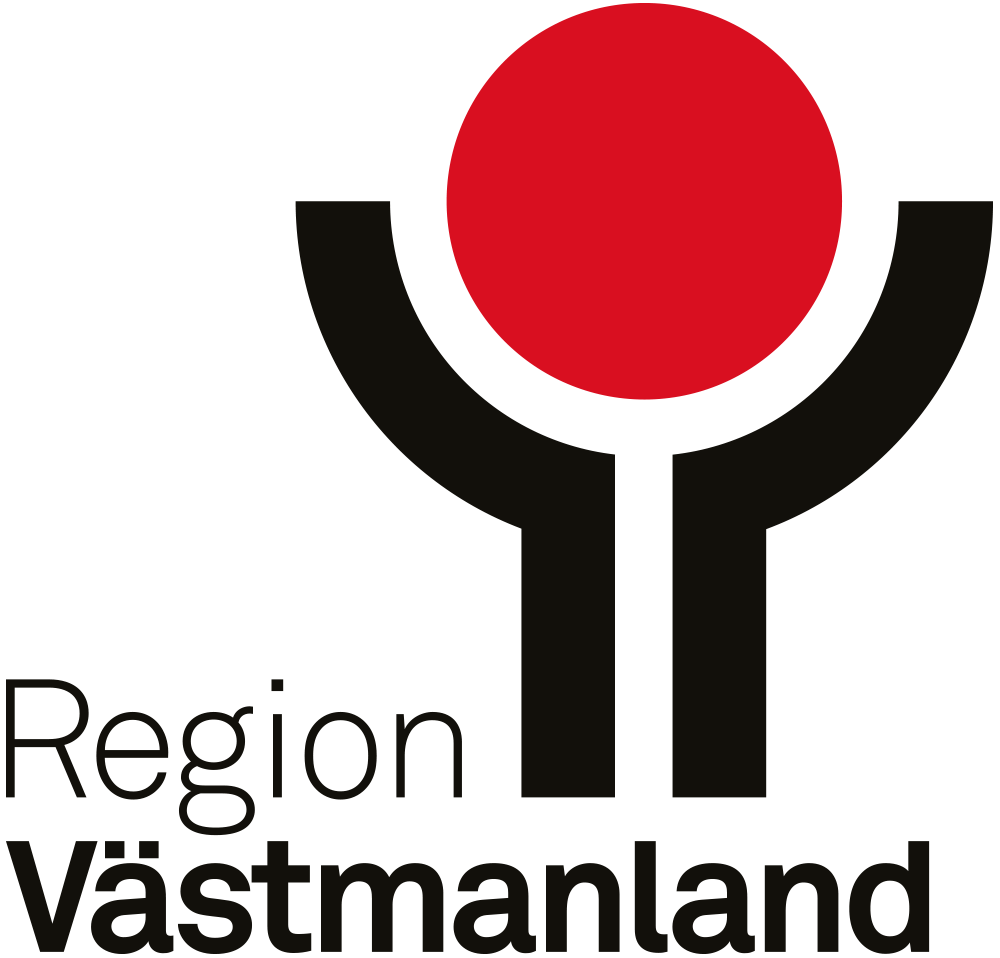

Ortstruktur

Inledning
Västmanlands län har ett strategiskt och centralt läge i Sverige och består av tio centralorter, 34 tätorter, 62 småorter samt övrig landsbygd. Antalet orter har under åren utvecklats och kan förändras av faktorer som till exempel befolkningsförändringar eller ekonomisk tillväxt. Orterna ligger relativt utspridda inom länets kommuner och har olika storlek, funktioner och karaktär. Vissa orter domineras av olika samhällsfunktioner som arbetstillfällen och service medan andra karakteriseras som boendeorter. Utöver orternas storlek, funktioner och karaktär påverkar även det geografiska läget och nivån av utbytet mellan orterna i länet. Orterna binds samman genom transportinfrastruktur som i sin tur skapar förutsättningar till utbyte mellan orterna. Mellan vissa orter är utbytet mindre, vilket kan bero på orternas relativa storlek eller avstånd. Generellt har större orter fler funktioner än mindre orter där de mindre orterna och övrig landsbygd är beroende av dessa angående arbete och service. Alla orter har olika utmaningar och förutsättningar för att utvecklas och orternas beroende av varandra kan skiljas åt. Med denna anledning finns ett motiv till att få en gemensam bild av ortstrukturen i Västmanland (Region Västmanland 2025).
Ortstrukturen handlar om förhållandet mellan orter och anges dels av storlek och vilka funktioner orterna har samt läget i relation till varandra men även utbytet mellam dem. I ortstrukturen delas orterna in i olika ortstyper baserat på deras funktioner och roller i den regionala geografin. Ortstrukturen är en kombination mellan befolkningens fördelning mellan orterna, geografiska läge och storlek. Orterna har delats in i åtta nivåer: Storregional nodstad, Centralort, Arbetsort, Serviceort, Bostadsort med viss service, Bostadsort, Småort och Utanför tätort.
Ortstruktur
Ur ett regionalt perspektiv finns det anledningar till att studera närmare hur tätorterna förhåller sig till varandra utifrån dess relativa storlek samt geografiska läge. Västmanlands ortstruktur visar större inslag på en polycentrisk struktur, vilket innebär att strukturen består av en dominerande ort. I den nordvästra delen av länet illustreras en mer monocentrisk- men flerkärnig struktur där det funktionella sambandet är beroende av centralorterna och dess utveckling (Adolphsson & Johansson 2006).
Västerås är länets storregionala nodstad och kan klassificeras som en tillväxtmotor i länet som vidare utgör en viktig nod för arbetsorter och serviceorter. Centralorterna har en viktig roll i länet då de ofta fungerar som knutpunkter för kommunikation, olika servicefunktioner samt arbetsmarknad (Region Västmanland 2025). I länet finns fler bostadsorter än arbets- och serviceorter. Bostadsorterna utmärks av ett färre antal arbetstillfällen i förhållande till antalet boende. Arbetsorterna präglas av att ha en funktion som lokalt arbetsmarknadscentrum med en stor andel arbetstillfällen och inpendling. Serviceorterna har även en större andel arbetstillfällen och inpendling samt upprätthåller olika servicefunktioner. Bostadsorterna med viss service fungerar som en nod för service men som samtidigt karaktäriseras som en bostadsort. Kartan visar vidare småorterna i länet som ligger i anslutning till och utanför tätorterna.
Metod
Genom att studera orternas roller och funktioner ges en större förståelse för dess funktionella samband och utvecklingsförutsättningar.
Orterna har delats in i de olika ortstyperna utifrån dataunderlag: total befolkning, dag/nattbefolkning, in- och utpendling, försörjningskvot samt servicegrad med mer. Därefter har underlaget för orterna analyserats och avgränsats för att sedan klassificera in orterna i ortstyperna. Statistiken är baserade på SCB:s statistikdata, Pipos regionalanalys och egna beräkningar. Nedan visas det underlag och avgränsningar som använts vid klassificeringen.
Storregional nodstad: Centralort med stor andel natt- och dagbefolkning inklusive alla funktioner i högre grad (service, utbildning, vård)
Centralort: [Fortsättning av definitionen...]